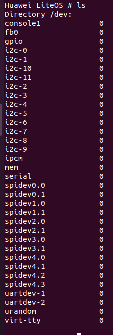
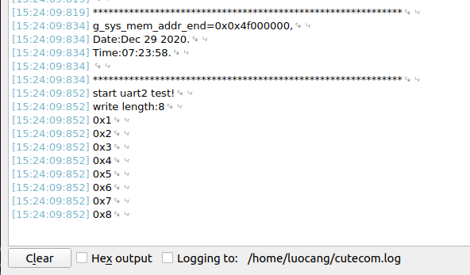

Hi3559a_开发(五)-A53调试：串口通信
一、修改makefile
海思官方提供的makefile不能支持多个文件的编译以及多文件夹的编译，因此需要对makefile稍作修改以便支持多文件的编译，其修改后的文件如下：
LITEOSTOPDIR ?= ../..
SAMPLE_OUT = ./build
include $(LITEOSTOPDIR)/config.mk
RM = -rm -rf
#LITEOS_BASELIB += -lipcmsg_single_liteos
LITEOS_LIBDEPS := --start-group $(LITEOS_LIBDEP) --end-group
LITEOS_CFLAGS += $(SINC)
include user/user.mk
SRCS += $(wildcard sample.c)
OBJS := $(SRCS:.c=.o)
all: chkbindir $(OBJS)
ifneq ($(LITEOS_CPU_TYPE), arm926)
ifneq ($(OUT)/lib/libipcm.a, $(wildcard $(OUT)/lib/libipcm.a))
echo "$(OUT)"
cp -rf $(LITEOS_CPU_TYPE)/*.a $(OUT)/lib
endif
endif
@$(LD) $(LITEOS_LDFLAGS) --gc-sections -Map=$(SAMPLE_OUT)/sample.map -o $(SAMPLE_OUT)/sample $(addprefix $(SAMPLE_OUT)/,$(notdir $(OBJS))) $(LITEOS_LIBDEPS) $(LITEOS_TABLES_LDFLAGS)
@$(OBJCOPY) -O binary $(SAMPLE_OUT)/sample $(SAMPLE_OUT)/sample.bin
cp $(SAMPLE_OUT)/sample.bin /workspace/05tftpboot/sample_a53
clean:
@if test -d $(SAMPLE_OUT) ; \
then \
rm -rf $(SAMPLE_OUT) ; \
fi
@rm /workspace/05tftpboot/sample_a53
test:chkbindir $(OBJS)
@echo $(OBJS)
$(OBJS): %.o: %.c
@$(CC) $(LITEOS_CFLAGS) $(LITEOS_CXXFLAGS) -o $(SAMPLE_OUT)/$(notdir $@) -c $^
chkbindir:
@if test ! -d $(SAMPLE_OUT) ; \
then \
mkdir $(SAMPLE_OUT) ; \
fi
修改后的makefile可以直接编译多个文件，将需要编译的文件.c添加到SRCS中，将链接的库添加到LITEOS_BASELIB中，将包含的头文件路径添加到LITEOS_CFLAGS中，git保存当前的工作目录。
cd sample/sample_osdrv/
git add .
git commit -m "modify makefile,support multi file compile"
二、测试串口
新建一个分支用来编写串口相关的代码。
git checkout -b test_uart
1. 打开串口
海思官方默认在A53测没有打开全部的串口，因此在使用的时候需要打开文件中的相关配置，其配置文件位于osdrv/platform/liteos_a53/liteos/platform/bsp/board/hi3559av100/cortex-a53_aarch64/include/hisoc/uart.h中，这里我们测试串口2，那么打开相对应的串口2即可，其中串口1用作调试串口。
#define UART0 0
#define UART1 1
#define UART2 2
#define UART3 3
#define UART0_ENABLE 0
#define UART1_ENABLE 1
#define UART2_ENABLE 1
#define UART3_ENABLE 0
串口2的中断默认接入到linux系统中，在liteos中使用该串口需要修改串口才能接收到数据，其中断映射文件位于osdrv/platform/liteos_a53/liteos/platform/bsp/board/hi3559av100/cortex-a53_aarch64/include/irq_map.h中。
#define TO_A53MP0 (1<<0x00)
#define TO_A53MP1 (1<<0x01)
#define TO_A73MP0 (1<<0x02)
#define TO_A73MP1 (1<<0x03)
#define TO_A53UP_ (1<<0x04) //Local
const unsigned char irq_map[OS_HWI_MAX_NUM-32] = {
/*time 0 timer 2 timer 4 timer 6 */
TO_A53MP0, TO_A53MP0, TO_A53MP0, TO_A53UP_, /* 32 ~ 35 */
/*time 8 timer 10 uart 0 uart 1 */
TO_A53UP_, TO_A53UP_, TO_A53MP0, TO_A53UP_, /* 36 ~ 39 */
/*uart 2 uart 3 uart 4 RTC */
TO_A53UP_, TO_A53MP0, TO_A53MP0, TO_A53MP0, /* 40 ~ 43 */
/*i2c 0 i2c 1 i2c 2 i2c 3 */
修改该部分，需要把所有的库都编译一下。
cd ../../
make
cd sample/sample_osdrv/
make
烧录到板卡中，用virt-tty登录shell控制台，发现已经存在uartdev-2设备了

2. 测试串口
海思提供基本的驱动库，其中包括了uart的驱动库，其中在配置uart时候需要先配置IO口，其中发现在UART驱动加载的时候已经初始化了串口的IO，因此不需要再做IO配置(uart4之后需要自己配置)。其中IO口的寄存器文档参考《Hi3559AV100_PINOUT_CN.xlsx》。
#define uart_pin_mux_cfg(uart_num) ({\
if(UART0 == uart_num){}\
else if(UART1 == uart_num){\
WRITE_UINT16(0x01, IO_MUX_REG_BASE + 0x07C);\
WRITE_UINT16(0x01, IO_MUX_REG_BASE + 0x084);\
}\
else if(UART2 == uart_num){\
WRITE_UINT16(0x01, IO_MUX_REG_BASE + 0x088);\
WRITE_UINT16(0x01, IO_MUX_REG_BASE + 0x08C);\
}\
else if(UART3 ==uart_num){\
WRITE_UINT16(0x02, IO_MUX_REG_BASE + 0x078);\
WRITE_UINT16(0x02, IO_MUX_REG_BASE + 0x080);\
}\
})
void uart_init(void)
{
#if defined LOSCFG_PLATFORM_HI3519 || defined LOSCFG_PLATFORM_HI3519V101 || defined LOSCFG_PLATFORM_HI3559
uart_pin_mux_cfg(CONSOLE_UART); /*lint !e506*/
uart_clk_cfg(CONSOLE_UART, true); /*lint !e506*/
#endif
}
编写测试代码： user_uart.c
#include "user_uart.h"
#define UART_DEV_TEST "/dev/uartdev-2" //测试串口2
uint8_t tx_buff[8] = {1,2,3,4,5,6,7,8};
uint8_t rx_buff[8];
void uart_test(void){
int fd,i;
int len;
dprintf("start uart2 test!\n");
fd = open(UART_DEV_TEST, O_RDWR);
if(fd < 0){
dprintf("can't open serial!\n");
}
ioctl(fd,UART_CFG_BAUDRATE,115200);
ioctl(fd,UART_CFG_RD_BLOCK,UART_RD_BLOCK);
len = write(fd, tx_buff, 8);
dprintf("write length:%d\n", len);
len = 0;
while(1){
if(read(fd,rx_buff,1) != 0){
len ++;
dprintf("0x%x\n",rx_buff[0]);
if(len == 8){
close(fd);
return;
}
}
}
}
user_uart.h
#ifndef __USER_UART_H__
#define __USER_UART_H__
#include "linux_head.h"
void uart_test(void);
#endif
liunx_head.h
#ifndef _LINUX_HEAD_H__
#define _LINUX_HEAD_H__
#include "sys/statfs.h"
#include "stdio.h"
#include "stdlib.h"
#include "fcntl.h"
#include "string.h"
#include "unistd.h"
#include "hisoc/uart.h"
#include "uart.h"
#include "shcmd.h"
#include "sys/prctl.h"
#include "sys/select.h"
#include "stdint.h"
#include "uart.h"
#endif
user.mk
SRCS += user/user_uart.c
SINC += -Iuser
编写代码后，使用make命令重新编译该部分代码后，生成的可执行文件输出到tftp根目录下，通过烧录观察串口的打印输出。 将uart2的物理引脚的TXRX连接在一起，发现串口已经能够收发数据，说明串口通信正常。 